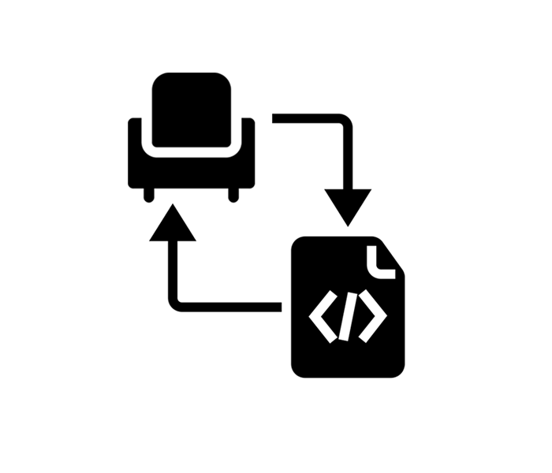
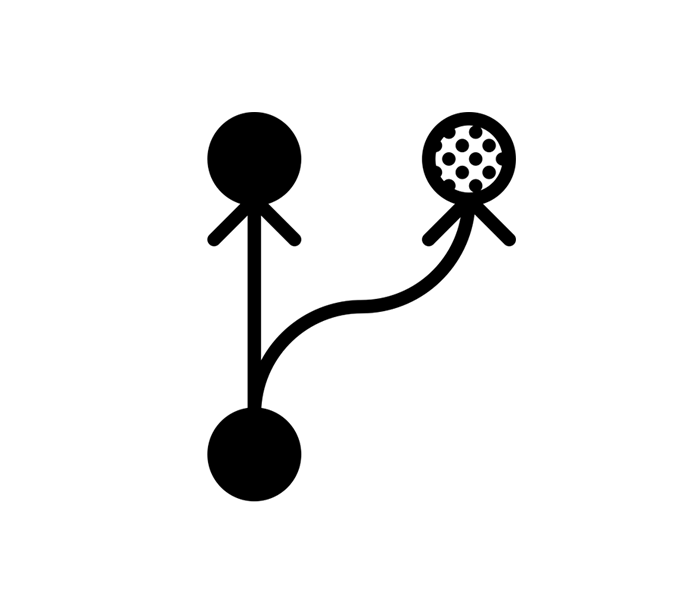
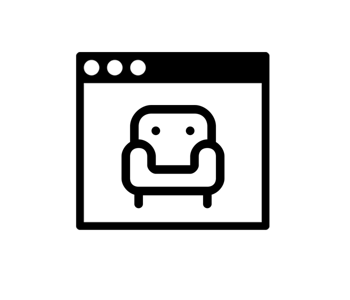

Writing code that does furniture design.TRY IT OUT
An open-source community for designers to experiment with parametric furniture design.
Parametric design is the use of computers and a mathematical approach for creating geometries, objects and design.
New Way to Design
It is a new way to think about furniture design and experiment with new ideas. We are just as curious to see what can be done.

New Way to Design
It is a new way to think about furniture design and experiment with new ideas. We are just as curious to see what can be done.
Honesty in Design
The designs stay 'honest' in concept as the narrative is recorded at every step. The exact contributions of each and every collaborator is recorded in the process.
Honesty in Design
The designs stay 'honest' in concept as the narrative is recorded at every step. The exact contributions of each and every collaborator is recorded in the process.
Democratizing Design
Furniture designs currently have a high entry barrier due to the resources required to manufacture at scale. A designer needs to establish a studio/fabrication infrastructure or align with larger companies to bring his/her designs to the market.With our production process, we can enable more upstarts to present their designs and let the community decide.
Democratizing Design
Furniture designs currently have a high entry barrier due to the resources required to manufacture at scale. A designer needs to establish a studio/fabrication infrastructure or align with larger companies to bring his/her designs to the market.With our production process, we can enable more upstarts to present their designs and let the community decide.

Evolving Designs
Designs are open to be replicated and forked. A design can be copied and morphed in different ways by different people adopting the design for their use.It's like a natural selection process for designs.
Evolving Designs
Designs are open to be replicated and forked. A design can be copied and morphed in different ways by different people adopting the design for their use.It's like a natural selection process for designs.
Emailing Chairs
The designs are in computer files which can be replicated wherever needed with high precision machines. Sending a chair can mean just emailing the design file to any location.
Emailing Chairs
The designs are in computer files which can be replicated wherever needed with high precision machines. Sending a chair can mean just emailing the design file to any location.
More Inclusive
The design, manufacture and supply chain has been a closed loop system owned entirely by individual entities.By breaking apart these aspects we think we can involve more independent participants to contribute and gain from this process while still keeping the whole process sustainable.
More Inclusive
The design, manufacture and supply chain has been a closed loop system owned entirely by individual entities.By breaking apart these aspects we think we can involve more independent participants to contribute and gain from this process while still keeping the whole process sustainable.
We have a cool decentralized way to make this work.
Furniture Design in your Browser
The code we write runs in the user's browser.Using threeJS, verbNURBS and modeJS the design code is executed on the client.We don't run any servers to do anything and design files are fully owned and mainatained by designers (via Github).

Furniture Design in your Browser
The code we write runs in the user's browser.Using threeJS, verbNURBS and modeJS the design code is executed on the client.We don't run any servers to do anything and design files are fully owned and mainatained by designers (via Github).
Digital Fabrication
Our platform and standards try to ensure that we can extract a CAD document from any design on the platform.These files can be fed into digital fabrication machines (think 3D printing) to manufacture the designs.We don't really 'manufacture' the designs. We enable the standards so anyone can make our designs.
Digital Fabrication
Our platform and standards try to ensure that we can extract a CAD document from any design on the platform.These files can be fed into digital fabrication machines (think 3D printing) to manufacture the designs.We don't really 'manufacture' the designs. We enable the standards so anyone can make our designs.
Open Collaboration
We use Github and Git to power our network. The whole community is essentially a bunch of connected Git repositries hosted on Github.On request the designs are fetched directly from the designer's design Git repo. The benefits of Git with pull requests, open commit histories and version tracking allow the dynamic and open collaboration.
Open Collaboration
We use Github and Git to power our network. The whole community is essentially a bunch of connected Git repositries hosted on Github.On request the designs are fetched directly from the designer's design Git repo. The benefits of Git with pull requests, open commit histories and version tracking allow the dynamic and open collaboration.
This is an experiment in process, and we invite more like minded people.